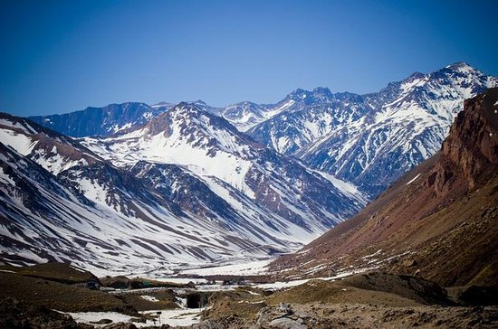

Viaja conmigo


Río de Janeiro
 Río de Janeiro es, si no el más, uno de los lugares más lindos que he visitado. Tiene de lo mejor en todo. No solo hablamos de playas, ciudades y bares, sino que la misma gente le da un toque que hace que cualquiera que vaya, quiera quedarse para siempre.
Río de Janeiro es, si no el más, uno de los lugares más lindos que he visitado. Tiene de lo mejor en todo. No solo hablamos de playas, ciudades y bares, sino que la misma gente le da un toque que hace que cualquiera que vaya, quiera quedarse para siempre.
Recomiendo Río de Janeiro a cualquiera que quiera vacacionar, divertirse, salir de fiesta, probar una gran variedad de frutas. En resumen, recomiendo Río de Janeiro a cualquiera.

Mendoza
Comenzaré hablando sobre mi tierra natal, Mendoza. Es uno de los lugares más bellos que conozco, gracias a su gran variedad de paisajes. Nadie que pise Mendoza debe perderse visitar las montañas. Mendoza tampoco se queda atrás en lo que es gastronomía y bares. Si visitas Mendoza, te recomiendo pasar por Arístides a probar lo mejor de la gastronomía local.
Algo que no hay que olvidar es que esta ciudad es una potencia en cuanto a exportación de vino, así que no hay que dejar de visitar sus prestigiosas bodegas.
No podía quedarme sin hablar de esta hermosa tierra, la cual creo que todos deberían visitar.
Perfil del autor
Soy Andrés Alvarez, un chico de Mendoza, Argentina. Actualmente tengo 24 años y me apasiona viajar. Cada lugar que conozca, tendrá una reseña en esta página. Al no tener la posibilidad de viajar tanto, tal vez este blog no esté tan activo en cuanto a contenido, pero sí a comentarios. También soy el autor de otros blogs, así que dejaré los links a continuación. ¡Gracias por leer!
Blog de Música
Blog de Gastronomía